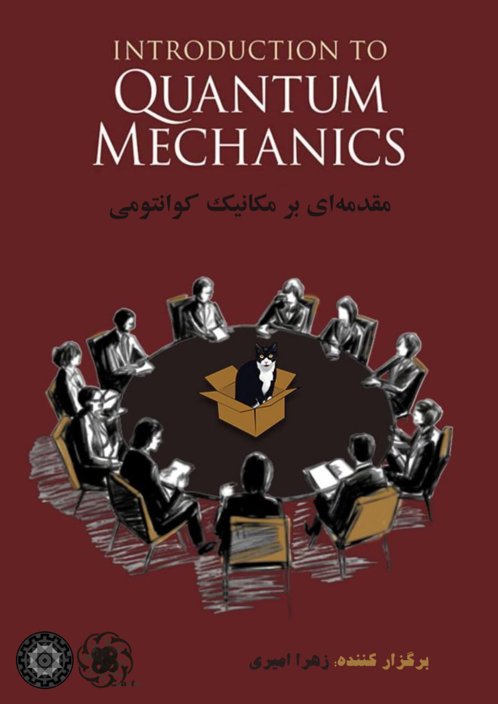
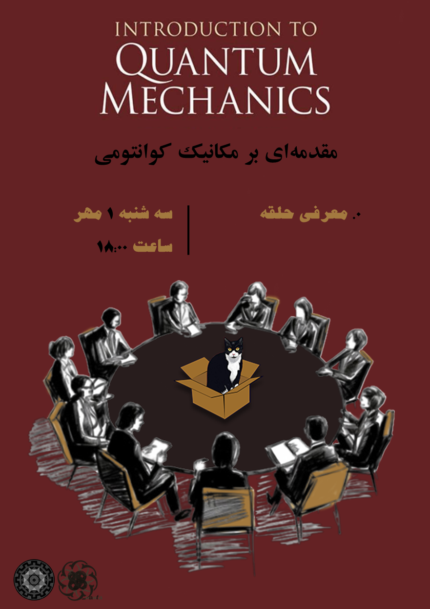

Introduction to Quantum Mechanics
Conductor: Zahra Amiri
In this circle, we will study and learn quantum mechanics from the ground up. The goal is to make sure that even participants who do not have prior familiarity with the subject can gradually become acquainted with quantum mechanics. The sessions will begin with fundamental topics and will roughly cover the equivalent of Quantum Mechanics I and II at the university level.
Unlike most of the ongoing Quanta circles, our intention here is to make this circle more interactive, with presentations given by physics students themselves.
Presenters do not need prior knowledge of quantum mechanics; simply reading the section they are assigned, along with reviewing previous material, will be sufficient. During their presentation, they can also ask questions that arose for them, clarify points, share additional insights, and engage in Q&A. These discussions will be complemented by the session organizer and other students who have studied more deeply.
The topics of the circle will follow the order in the table of contents of the main reference, but we may also incorporate material from other sources. All announcements about the circle will be made in the group
Reference:The primary text we will follow is Introduction to Quantum Mechanics by David Griffiths — a clear and accessible book for beginning this subject. However, as noted, some sessions will explore additional material from other sources. We will also have dedicated problem-solving sessions, where we will work through interesting or challenging exercises from Griffiths or questions drawn from elsewhere.
Prerequisites:*Familiarity with linear algebra, complex numbers, and calculus (up to partial derivatives) *Background knowledge of classical mechanics and electromagnetism
Sessions
